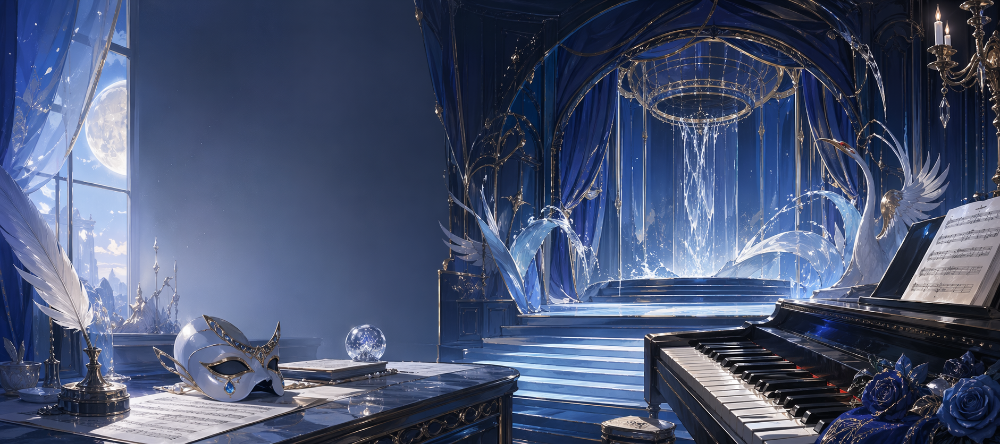

News 动态 / Notes 笔记 / Life 生活
qqqzj@Crane
0
News 动态
0
Notes 笔记
0
Life 生活

Index 目录
Content Map 内容索引
About me 关于我
qqqzj@Crane
Hi, I am qqqzj. This is my small archive for growth, notes, and daily moments. 这里会存放我的发展记录、想法笔记和生活片段。
I like quiet systems, beautiful interfaces, and the feeling of slowly becoming better. 我也喜欢带一点水蓝歌剧感的页面氛围。
Bulletin 公告板
News 动态
Notebook 笔记本
Notes 笔记
Life 生活